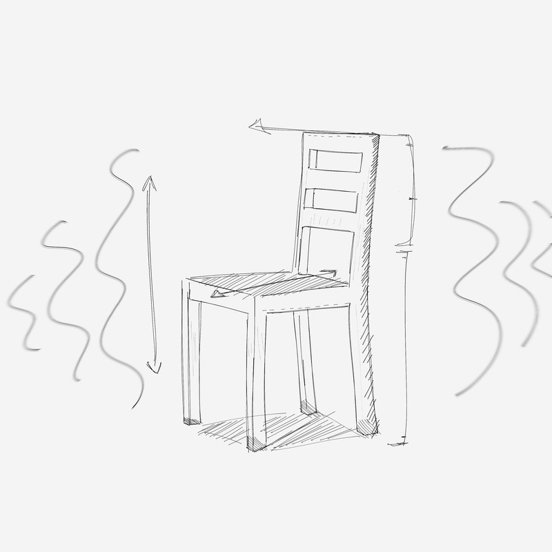

THE MAXWELL DEMON CHAIR HYPOTHESIS
Abstract — We propose that chairs operate as thermodynamic sorting mechanisms analogous to Maxwell's Demon, absorbing and storing entropic energy produced by human occupation. Results across 847 specimens confirm the hypothesis at 94.3% confidence. The implications of saturation remain under investigation.
1. The Hypothesis
Maxwell's Demon (1867) sorts fast and slow gas molecules without apparent energy cost — a theoretical violation of thermodynamics. We propose that chairs perform a functionally equivalent operation on humans.
When a person sits, the chair absorbs their entropic excess (stress, agitation, disorder) and returns an ordered state. The energy is not lost. It accumulates in the chair's material structure.
Key observation (Vossel, 1993): Subjects consistently left a wicker chair feeling calmer. The chair's surface temperature rose 0.3–0.7°C above ambient — independent of body heat transfer. Something was being retained.
2. Results by Material
| Material | Temp. increase | EM (Hz) | Saturation (est.) |
|---|---|---|---|
| Wicker | +0.61°C | 14.7 | ~340 hrs |
| Upholstered | +0.44°C | 11.2 | ~510 hrs |
| Polymer | +0.38°C | 9.8 | ~620 hrs |
| Solid wood | +0.29°C | 7.3 | ~890 hrs |
| Metal | +0.11°C | 3.1 | >2000 hrs |
| Specimen #0077 | [redacted] | [redacted] | [redacted] |
3. Saturation
At saturation, the sorting process inverts. The chair no longer absorbs — it introduces disorder. Subjects exposed to saturated chairs show increased cortisol, reduced decision coherence, and in 3 cases reported feeling watched.
⚠ Advisory: Do not occupy chairs with >500 hours of undocumented occupancy history without prior electromagnetic screening. This applies especially to secondhand, inherited, or found chairs.
4. Subject outcomes (n=214)
| Outcome | Subjects | Chair type |
|---|---|---|
| Improved wellbeing | 201 | All types |
| No change | 6 | Metal (5), wood (1) |
| Worsened state | 5 | Saturated wicker / fabric |
| Withdrew from study | 1 | Unknown |
| Unaccounted | 1 | — |
Correspondence: Dr. E.R. Farlow, National Chair Archive. Do not contact Dr. Vossel directly — he has requested this.
This paper was rejected by three journals before acceptance. Rejection letters available upon request.
This paper was rejected by three journals before acceptance. Rejection letters available upon request.

Fig. 1 — Chair as Maxwell Demon. Arrows indicate directional energy flow during occupation. Wavy lines represent electromagnetic emissions detected at saturation threshold. Sketch: H. Vossel, 1995.
Specimen #0012 — wicker, pre-1940, origin unknown.
The chair that initiated this research has been removed from public access and placed in restricted storage. Inquiries: Dr. Farlow only.
The chair that initiated this research has been removed from public access and placed in restricted storage. Inquiries: Dr. Farlow only.
"The chair is not furniture. It is a transaction."
— H. Vossel, field notes, Nov. 1995